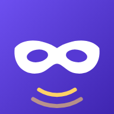

Masquerade Calls
Voice calls in your browser, with your voice changed live.

Install on your iPhone
Tap the Share button in Safari, then Add to Home Screen.
Get started
Turn on your microphone to pick a voice and get your call code. Headphones give the best sound.
Your voice
Your call code
······
Connecting…
Call someone
The other person opens this same page and tells you their code, or you send them your invite link.
Incoming call
Calling
0:00
Ringing…
You can switch voices during the call. The other person hears the change right away.